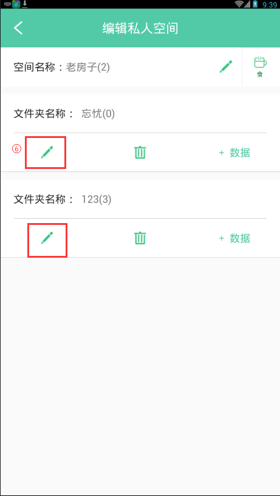
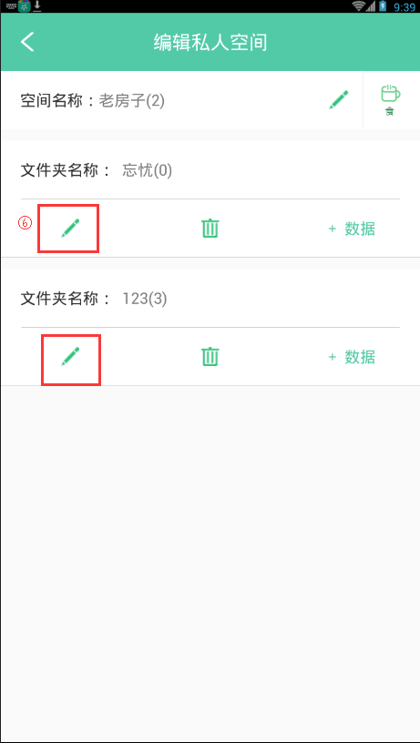

21. 如何编辑文件夹？
1. 导航栏点击"空间"->"私人空间"->"老房子"。

2. 点击右上角"..."->"编辑"。
3. 单击文件夹下的修改图标，编辑文件夹名称。
4. 编辑文件夹名称后，点击"是"，文件夹名保存成功。
5. 点击文件夹下的删除图标，可删除该文件夹。
- 注：当文件夹中无文件时才可以删除。
1. 导航栏点击"空间"->"私人空间"->"老房子"。
2. 点击右上角"..."->"编辑"。
3. 单击文件夹下的修改图标，编辑文件夹名称。
4. 编辑文件夹名称后，点击"是"，文件夹名保存成功。
5. 点击文件夹下的删除图标，可删除该文件夹。